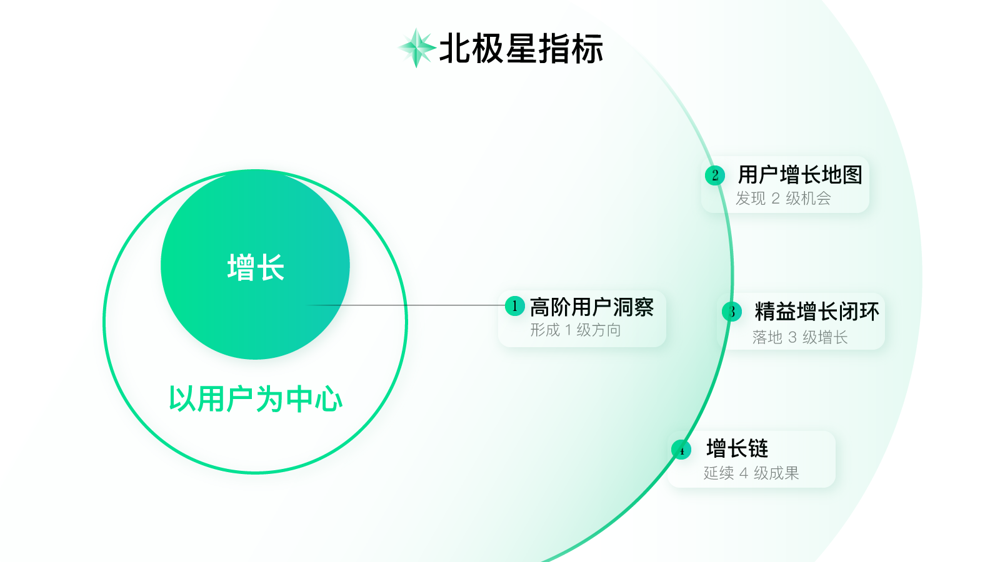
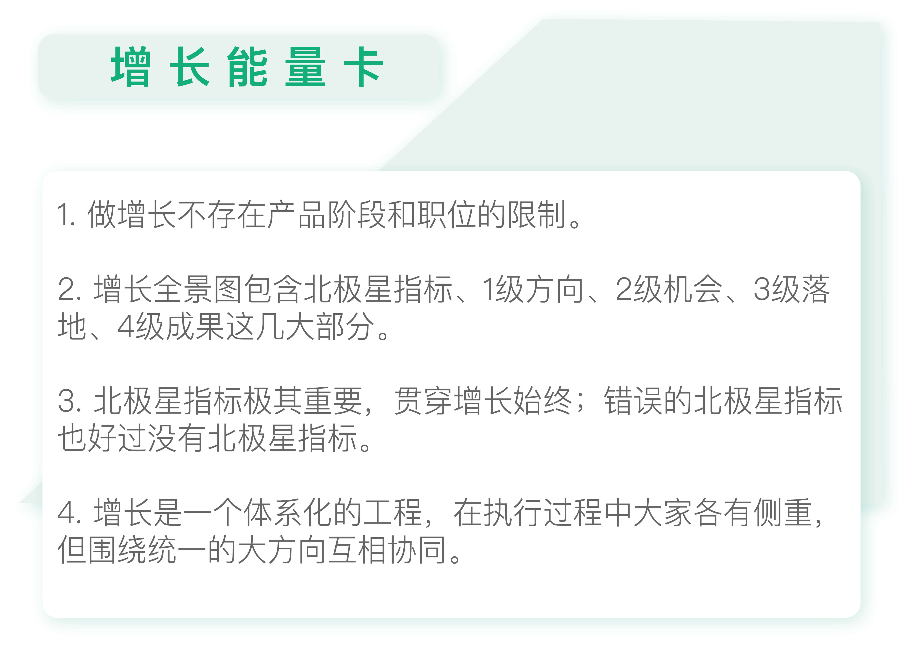

- 00 开篇词 人人都是增长官.md
- 01 预习 增长小白如何“弯道超车”？.md
- 02 预习 如何理解“增长”？.md
- 03 预习 不同职能如何做好增长？.md
- 04 预习 做增长如何处理职能间的矛盾？.md
- 05 正确目标找不对，天天加班也枉然.md
- 06 活学活用北极星指标.md
- 07 OKR如何助力增长？.md
- 08 不懂用户调研？那就对了！.md
- 09 调研目标：在差异性洞察中找到爆破点.md
- 10 数据分析：在“花式对比”中发现玄机.md
- 11 用户分类：围绕北极星指标细分人群.md
- 12 用户访谈：像侦探一样寻找破案线索（上）.md
- 13 用户访谈：像侦探一样寻找破案线索（下）.md
- 14 提炼用户差异，发现增长契机.md
- 15 挖掘产品优势，打破增长瓶颈.md
- 16 定位营销差异，抢占用户心智.md
- 17 一级方向：找到增长爆破点.md
- 18 B端产品如何调研？.md
- 19 全局规划增长机会.md
- 20 统筹全局的用户增长地图.md
- 21 案例解析：定义关键增长指标.md
- 22 正负双向洞察，找准切入点.md
- 23 二级机会：制定增长策略.md
- 24 为一家濒临破产的公司制定增长策略（上）.md
- 25 为一家濒临破产的公司制定增长策略（中）.md
- 26 为一家濒临破产的公司制定增长策略（下）.md
- 27 为什么指标数据怎么优化都不提升？.md
- 28 案例解析：打造增长闭环（上）.md
- 29 案例解析：打造增长闭环（下）.md
- 30 案例解析：唤醒沉睡用户（上）.md
- 31 案例解析：唤醒沉睡用户（下）.md
- 32 没有分解，就无缘增长.md
- 33 四个要点颠覆传统需求文档.md
- 34 三级落地：无限场景应用.md
- 35 手把手教你设计一次成功的实验（上）.md
- 36 手把手教你设计一次成功的实验（下）.md
- 37 积少可成多，别针换别墅.md
- 38 四级延续：增长组件库案例.md
- 39 以用户为中心增长.md
- 增长导航图 增长专栏的知识架构是怎样的？.md
- 尾声 结束意味着新的开始.md
- 预习答疑 你需要一张思维导图吗？.md
03 预习 不同职能如何做好增长？
你好，我是刘津。
今天我要跟你分享的主题是不同的职能如何通过增长全景图做好增长这件事。
增长无限制
增长是企业在任何时刻都需要去做的最重要的事情，任何职位都需要助力增长。
比如说，产品早期要探索方向，要教育市场，这是增长；为了发展，去谈合作、拉投资，这是增长；做广告、发优惠券，这也是增长；数据驱动、精细化运营，当然也是增长；甚至企业发展到一定阶段开始特别关注安全或体验问题，这也是增长，虽然这可能很难和营收指标直接关联……
只要是在当前阶段能促进企业价值及用户价值提升的事情，都可以算作增长的范畴。
所以说，不管你是CEO、CMO，还是产品经理、工程师、设计师，还是现在大家非常关注的增长黑客，只要做的是有利于企业发展的事情，都是在做增长。但这并不意味着每个人每天在做的所有工作都是增长。
我们日常做的大部分工作很可能都是无效的，因为没有围绕正确的目标去做正确的事情。
之前经常有学员学习完课程说：我现在才发现之前居然浪费了那么多时间做了那么多没用的事情。关于目标这件事，我会讲很多，这一讲会着重带你理解北极星指标的概念，打好“增长”基础。
总之，什么职位都有可能助力增长，只不过不同职位所做的增长，方式和侧重点不同而已。增长并不存在产品阶段和职位的限制。
既然不同职位间有那么多的区别，那大家该如何一起协同做增长呢？我想用一张图来回答你。
增长全景图
这张增长全景图，是我们团队在探索实践中逐渐沉淀出的方法体系。也是这个专栏的主体内容。

初次看到这张图你可能会有点迷糊，理不清楚这张图和前面两讲内容的关联，我现在带你整体串一下，你就明白了。
做增长需要明白的最重要的理念：最终为用户，简单却有效。
如何做到“最终为用户，简单却有效”？结合产品极客和增长黑客思维：以用户为中心，通过差异性洞察找到增长的爆破点，再配合数据驱动的实验方法，持续地以最小成本创造最大价值。也就是“以用户为中心增长”。
想知道更具体的操作方式？那就请看“增长全景图”。
今天只是简单介绍一下，更加详细的实践操作我会在后面的文章里为你一一解析。
为了让你更好理解，我会拿我目前所在的宜人贷来举例，为你阐释这张增长全景图，这样你就清楚多了。
北极星指标
增长全景图中的最上方写着北极星指标。
顾名思义，北极星指标就好像探险途中的那颗北极星，为你指明前进的方向，避免迷失。它对应的是公司长远的价值方向，一般情况下由CEO提出。也可以通过对行业及公司、用户的研究分析得出。
对于宜人贷借款来说，公司的北极星指标是高利润，也就是低成本高贷款余额。贷款余额是借款人尚未归还的贷款总额，简单理解就是放贷金额。
北极星指标极其重要，不仅指挥整个团队的大方向，也通过层层分解引导不同阶段的增长策略和优先级安排。它贯穿增长始终。
错误的北极星指标好过没有北极星指标，因为错了还可以马上调整；但如果没有北极星指标，团队就会成为没头苍蝇，白白错失市场机会也浪费了大量人力物力。
1级方向：差异化定位及增长战略
有了北极星指标，接下来我们要根据北极星指标寻找自己的增长方向。图中的1级增长方向关乎产品差异性定位、核心竞争优势、具体战略等。
前面我们说过要先通过差异性洞察找到增长的爆破点，这个爆破点很类似“定位”。定位其实就是打产品差异化，并且通过营销推广等一系列手段把这个差异化深植入用户心中，抢占用户心智。这样只要用户一遇到相关的场景需要做决策时就会先想到你，而让竞争对手只能退避三舍另辟蹊径。
关于定位理论有很多经典书籍，推荐大家看看《定位》《视觉锤》《抢占心智》《史玉柱自述》这几本书。
拿宜人贷的1级方向举例，通过洞察我们发现它的核心优势是风险控制能力强，对于二三线城市人群来说额度远高于其它产品。
所以宜人贷把“额度高”作为产品的差异性定位，通过一系列营销推广、内容强调，深植用户心中。“宣传并突出额度高”就是我们的1级方向。
一般情况下，增长的1级方向由公司战略级领导根据市场分析、经验判断等，围绕北极星指标提出；也可以由其它团队根据数据分析、用户研究等结果，为上级领导提供建议。1级方向不一定只有一个，但不宜太多，是最关键最重要的增长方向。
2级机会：全盘考虑发现增长机会
2级增长机会就是贯彻1级增长方向的具体事项。
增长机会五花八门，根据团队能力，我们当时选择了“优化营销落地页”“优化首页流量分发”“优化借款流程”“唤醒沉睡用户”等多个增长机会作为发力点。需要记住的是不管做什么事情，都要谨记围绕1级方向“宣传并突出额度高”这个方向去做。
增长的2级机会一般情况下由增长负责人或产品运营负责人根据增长方向提出，可以有很多个。跟1级方向相比，2级机会更加具体也更加多样化。
3级增长：打造闭环落地实施增长
选择好增长机会后就可以开始发力实践、落地3级增长了。
比如你选择了“优化营销落地页”这个增长机会，那么接下来你就要明确指标、提出假设、分解假设、上线实验、观察结果并进行下次实验。这和传统的产品设计流程：比如细化需求、完成原型、开发上线、结果检验等有一些区别，我会在后面的文章中详细介绍。
这个过程一般由产品经理或运营、设计师、开发人员等共同完成。
4级成果：总结增长规律规模复制
积累3级增长过程中的实验结果、摸索规律，把规律运用到其它相关的项目、功能、界面上，最终会带来4级批量增长。
比如，在优化营销落地页的过程中，你发现蓝色比红色效果好，字号大一号效果好……那你就可以把这些结论复用到App页面当中，当然前提是这些页面的用户群体一致。
这个工作一般由同时负责多条业务线的公共团队负责人提出。比如作为一个横向支持多条业务线的设计负责人，很容易观察到不同业务线的共性从而发现更多节约资源、提升效率的机会。
这个规律不仅限于设计层面，还可以是功能层面、甚至产品层面的。通过实验积累你可能会发现各种以前从未发现的增长规律。
讲到这里，你可以看到，增长是一个体系化的工程。
所有人做的事情由上至下一脉相承。虽然在执行中各有侧重，但大方向一定是统一的，不是闭门造车，这样才有可能做到高效增长。
有了“增长全景图”，你就可以清晰自己目前所处的情况和位置，找到上下游缺失的信息，更容易做出理想的成绩。
在下一讲中，我会和你一起讨论执行过程中一些比较实际的问题。

思考题
最后，给你留一道思考题。
从增长全景图来看，你之前的工作覆盖了哪些内容？之后你打算如何参与增长呢？在这个过程中你有遇到什么问题吗？
欢迎你在留言区写下你的想法或者提出自己在工作中遇到的问题，与我和其他同学一起讨论。
如果你觉得有所收获，也欢迎把文章分享给你的朋友。
© 2019 - 2023 Liangliang Lee. Powered by gin and hexo-theme-book.